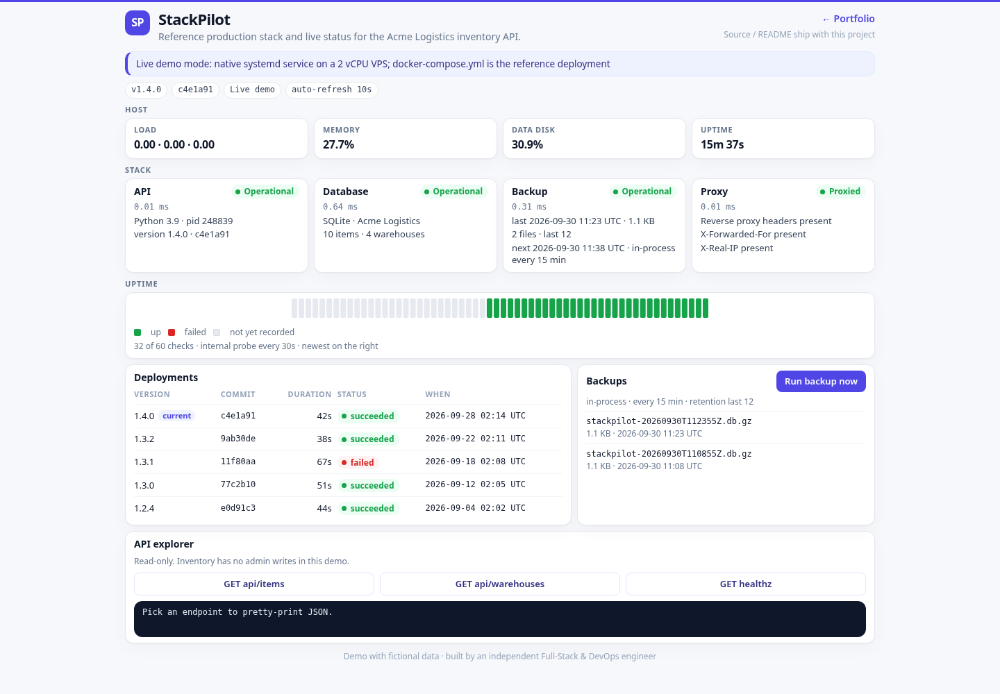
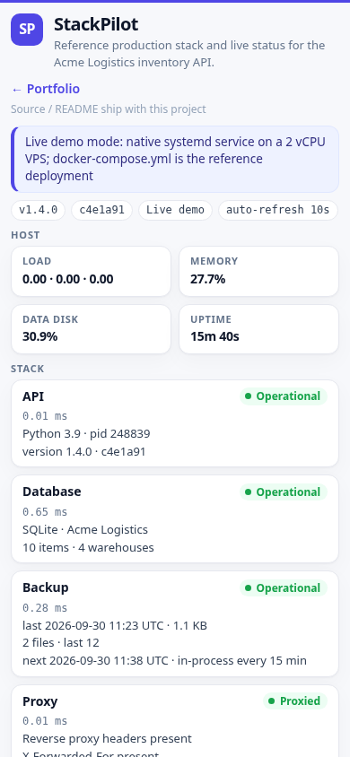

StackPilot
Reference production stack and live status page for a small inventory API. The fictional tenant is Acme Logistics. The page you can click is a real process: SQLite, host metrics from /proc, and gzipped snapshots on a timer. docker-compose.yml is the shape you would run on a VPS when you want Postgres, nginx, and a backup sidecar.
Overview
StackPilot is a portfolio piece for shipping a small SaaS API onto one machine without pretending the demo container is the production container. The same FastAPI app speaks Postgres when DATABASE_URL is set and SQLite otherwise. The status page shows which mode you are in, how fresh the backups are, and whether the request came through a reverse proxy.
Problem → Solution → Result
Problem
- A one-process API has no honest story for health, backups, or rollback. The usual answer is "SSH in and look at logs."
- Status pages that only return
{ "status": "ok" }hide a down database and a backup that has not run in weeks. - A public demo on a 2 vCPU VPS cannot afford a full Compose stack, but the write-up still has to show the production shape.
Solution
- A Compose file with four services on a private network: nginx (
proxy), the API, Postgres 16, and apg_dumpsidecar. Every service has a healthcheck,restart: unless-stopped, a memory and CPU cap, and json-file log rotation. - The same app runs natively for the live demo. It uses SQLite, an in-process snapshot scheduler (sqlite3 backup API, gzip, keep 12), and a status page that reads
/proc. - One read-only inventory API (items and warehouses) plus a single rate-limited write: "run a backup now." No admin surface, no shell, no URL fetching.
Result
GET /api/statusreturns component health, check latency, row counts, backup age, proxy-header flags, host metrics, a 60-slot uptime history, and the seeded deploy list.GET /metricsexposes Prometheus text for process up, request count, and backup age in seconds.pytestcovers health, the status document, inventory, backup retention, both rate-limit windows, and relative URLs. The Compose file is checked by parsing it. Docker is not required to run the demo.
These are capabilities of this demo, not claims about a client engagement.
Features
- Status page with auto-refresh every 10 seconds, an uptime bar (inline SVG), and a read-only API explorer.
- Component cards for
api,database,backup, andproxy, each with status, latency, and details. - Host strip: load average, memory used percent, disk used percent of the data directory's filesystem, process uptime.
- SQLite backups every 15 minutes in demo mode, on demand from the button, retention of the newest 12.
- Backup writes limited to one per minute per address and one every two minutes for all addresses. The address is
X-Real-IPwhen the proxy set it. - Request body cap of 8 KB. Inventory responses are escaped in the page (
textContentin the browser, HTML escaping on the server). - Fictional seed data so the first paint is not an empty table. Companies and people are made up (Acme Logistics, Jane Doe).
- Reference proxy config: gzip, security headers, rate limits, passive upstream health (
max_fails), HTTP and TLS listeners. - Runbook for deploy, a short-blip rollout, rollback, a restore drill, and a host hardening checklist.
Architecture
Live demo (what the public page is):
Browser
|
| relative URLs (api/..., static/..., ../)
v
edge nginx, prefix stripped
|
v
systemd: python -m app 127.0.0.1:18801
|
+--> SQLite DATA_DIR/inventory.db
+--> snapshots DATA_DIR/backups/*.db.gz (15 min, keep 12)Reference Compose stack (docker-compose.yml):
Browser
|
v
proxy (nginx) :8080 and :8443
| gzip, security headers, rate limit, X-Real-IP / X-Forwarded-For
v
api (FastAPI, uid 10001) ----> db (postgres:16-alpine, volume pgdata)
^
|
backup sidecar
pg_dump | gzip
7 daily + 4 weekly (volume backupdata)flowchart LR
browser[Browser] --> proxy[nginx proxy]
proxy --> api[FastAPI api]
api --> db[(Postgres 16)]
backup[backup sidecar] --> db
backup --> vol[(backup volume)]
api -. read only .-> volThe API does not shell out to pg_dump. In Compose mode it only stats the files the sidecar wrote. In demo mode it writes SQLite snapshots itself. Operations steps, including the restore drill and the hardening checklist, are in docs/runbook.md.
Notes:
depends_onusescondition: service_healthy, so the proxy waits for the API and the API waits for Postgres.- Postgres has no published port. The backup container is the only writer of the dump volume. The API mounts it read-only.
/healthzis liveness. It does not query the database. A database outage shows on the status page instead of crash-looping the process.- Resource caps are sized for a small VPS: proxy 64M, API 150M, Postgres 256M with
shared_buffers=64MB, backup 128M.
Tech stack
- Python 3.9+ (tested style for 3.9 and 3.11), FastAPI, uvicorn, stdlib
sqlite3. - Optional
psycopgwhenDATABASE_URLis a Postgres URL. The import is inside the Postgres path. A missing driver is an error, not a silent switch to SQLite. - Postgres 16 and nginx 1.27 in the reference images.
- Vanilla HTML, CSS, and JS. No CDN, no web font, no tracker. The uptime chart is an inline SVG.
- Prometheus text on
/metrics. pytest, ruff, and a Compose file parse in CI.
Run locally
venv
python3 -m venv .venv
.venv/bin/pip install -r requirements-dev.txt
.venv/bin/python -m appOr ./run.sh, which creates .venv if needed and listens on 127.0.0.1:18801. Open http://127.0.0.1:18801/.
The banner on that page should read: live demo mode, native process, Compose file is the reference deployment.
Docker Compose
Docker is the reference deployment. It is not required to view the demo.
cp .env.example .env
# edit POSTGRES_PASSWORD; keep it URL-safe
docker compose up -d --build
curl -fsS http://127.0.0.1:8080/healthzMakefile targets: up, down, logs, backup, restore, test, venv.
make up
make backup
make restore FILE=backups/daily-YYYYMMDDTHHMMSSZ.sql.gz CONFIRM=yesmake restore will refuse until CONFIRM=yes. Prefer the scratch-database drill in the runbook before you point it at the primary database.
Configuration
| Variable | Default | Role |
|---|---|---|
PORT | 18801 | Listen port |
HOST | 127.0.0.1 | Bind address. Compose sets 0.0.0.0 so the proxy can reach the API |
DATA_DIR | ./data | SQLite file and, in demo mode, the backup directory parent |
BACKUP_DIR | $DATA_DIR/backups | Snapshot directory. Compose sets /backups |
DATABASE_URL | empty | Empty or sqlite uses SQLite. postgresql://... uses Postgres |
BACKUP_INTERVAL_SECONDS | 900 (minimum 60) | Demo scheduler period, and the sidecar period in Compose (Compose example uses 86400) |
GIT_COMMIT | c4e1a91 | Displayed commit, 7–40 hex characters. Anything else is ignored |
POSTGRES_USER | stackpilot | Compose only |
POSTGRES_PASSWORD | change-me-demo-only | Compose only. Placeholder, change it before a real deploy |
POSTGRES_DB | stackpilot | Compose only |
SQLite demo retention is fixed at the newest 12 files so the directory cannot grow without a bound. The sidecar keeps 7 daily dumps and 4 weekly dumps.
API endpoints
| Method | Path | Notes |
|---|---|---|
GET | / | Status page |
GET | /healthz | {"status":"ok",...}. No database work |
GET | /api/status | Components, host, backups, uptime history, deployments |
GET | /api/items | Fictional Acme Logistics items |
GET | /api/warehouses | Fictional warehouses |
GET | /api/backups | Snapshot list, retention, next run |
POST | /api/backups/run | SQLite demo only. 429 when rate limited, 409 on Postgres, 413 above 8 KB |
GET | /metrics | Prometheus text: stackpilot_up, stackpilot_http_requests_total, stackpilot_backup_age_seconds |
Paths in the browser are relative (api/items, not /api/items) so the page works both at the bare port and behind a stripped prefix.
Tests
.venv/bin/python -m pytest
.venv/bin/ruff check app testsThe suite checks health, the status JSON, inventory, a real gzipped SQLite snapshot (via the backup API) and the keep-12 cap, both rate-limit scopes, the body cap, relative URLs, Prometheus text, the Compose file, the nginx tokens, the shell scripts, the systemd unit, and the Dockerfile USER / HEALTHCHECK.
CI (.github/workflows/ci.yml) runs that lint and test matrix on Python 3.9 and 3.11, then docker build of the API image. The workflow lives with this project. If the git root is the parent monorepo, the job still finds stackpilot/requirements-dev.txt.
Deployment notes
The live demo is a systemd service behind nginx on a small VPS, not a container. The unit is deploy/stackpilot.service (User=ec2-user, WorkingDirectory=/opt/portfolio/stackpilot, PORT=18801, DATA_DIR=/opt/portfolio/stackpilot/data, Restart=always, MemoryMax=150M, NoNewPrivileges=yes). Install steps are in docs/runbook.md.
Intended public URL: https://3.1.79.63/portfolio/stackpilot/ with the prefix stripped by nginx (proxy_pass http://127.0.0.1:18801/;). The page links back to the portfolio with ../. This repository does not install the unit or edit the edge proxy; that is a later step.
The Compose file remains the reference for a single-VPS production shape: private database network, TLS-ready proxy, healthchecks, log rotation, and a restore drill. Honest limit: one API replica, so a deploy is a short blip masked by the proxy, not a rolling update across a fleet.
Screenshots
Desktop, 1440×1000:

Mobile, 390×844:
